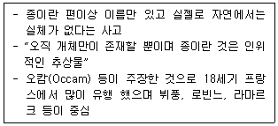
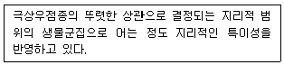
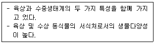
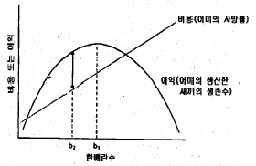
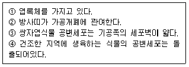
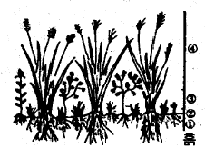
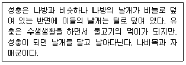
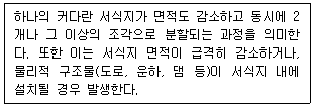

생물분류기사(식물) (2005-09-04 기출문제)
1과목: 계통분류학
1. 다음 태좌 중에서 가장 발달한 것은?
- 중축태좌
- 변연태좌
- 독립중앙태좌
- 기저태좌
(정답률: 알수없음)

2. 다음 분류군 중 세계의 바다플랑크톤으로 먹이연쇄에 있어서 매우 중요한 역할 하는 무리는?
- 윤충류(Rotifera)
- 요각류(Copepoda)
- 지각류(Cladocera)
- 섬모충류(Ciliata)
(정답률: 100%)
3. 다음 쌍자엽식물들의 계통진화 계열이 순서대로 잘 표현된 것은?
- 목련 - 미나리아재비 - 앵초 - 질경이
- 명아주 - 수국 - 수련 - 물푸레나무
- 미나리아재비 - 철쭉 - 초롱꽃 - 노루오줌
- 후박나무 - 선인장 - 곰취 - 제비꽃
(정답률: 알수없음)
4. 식물학자들이 식물의 이름으로 향토명이나 일반명 대신 라틴어화된 학명을 쓰는 이유로 타당하지 않는 것은?
- 향토명이나 일반명은 지역 언어로 사용되고 있기 때문에 전세계적인 통용이 불가능하다.
- 학명에는 향토명이나 일반명에 없는 그 식물에 관한 속이나 과 또는 분포에 관한 정보를 포함하고 있다.
- 희귀식물의 경우 향토명이나 일반명이 없는 경우도 있으나 학명은 항시 있다.
- 들국화라는 향토명은 실제 여러 종류의 국화과 식물을 가리키고 있다.
(정답률: 60%)
5. 다음 중 계통진화의 순서가 올바른 것은?
- 해면동물 - 선형동물 - 편형동물 - 절지동물
- 해면동물 - 자포동물 - 편형동물 - 선형동물
- 해면동물 - 선형동물 - 환형동물 - 편형동물
- 해면동물 - 자포동물 - 선형동물 - 편형동물
(정답률: 70%)
6. 후생동물(Metazoa)은 어떤 동물을 지칭하는가?
- 다세포 동물
- 성체가 되어도 유생의 형태를 유지하는 동물
- 낭배의 원구가 입이 되는 동물
- 낭배의 원구가 항문이 되는 동물
(정답률: 75%)
7. 동물 계통관계를 연구하는 체계적인 방법 중 분기로(cladistics) 이론을 처음으로 제시한 사람은?
- Hennig
- Darwin
- Mayr
- Simpson
(정답률: 80%)
8. 다음 중에서 닭의장풀아강에 속하지 않은 것은?
- 천남성과
- 사초과
- 부들과
- 골풀과
(정답률: 75%)
9. 다음 식물 중 판개(Valvular)약을 갖고 있는 식물은?
- 매자나무, 녹나무
- 목련, 장미
- 쥐손이풀, 앵초
- 진달래, 가지
(정답률: 59%)
10. 식물의 고유성(endemism)의 주된 역할이 아닌 것은?
- 해당 지역의 과거 기후변화 및 지리적, 지질적 역사와 관련
- 식물구(floristic regions)를 결정하는 기준
- 해당 식물구의 특수성을 밝힘
- 해당지역의 동물상(fauna)의 결정
(정답률: 92%)
11. 다음의 보기가 설명하고 있는 종의 개념은?

- 진화적 종개념
- 분자생물학적 종개념
- 유형적 종개념
- 유명론적 종개념
(정답률: 알수없음)
12. 다음 중 유한화서인 것은?
- 총상화서
- 산형화서
- 원추화서
- 취산화서
(정답률: 80%)
13. 원저자는 신종 기재 시 완모식을 지정하고 공인된 전문 학술지에 공표해야 하는데 그 자료에 대한 설명으로 맞지 않는 것은?
- 모식표본의 라벨에 기입된 정보도 기록한다.
- 숙주의 종명은 매우 중요한 자료가 된다.
- 유충이나 유생 또는 연령 등의 발생단계를 기록한다.
- 표본이 채집된 해발고도 및 심도를 기록하지만 화석의 경우에는 발견된 지충은 중요하지 않다.
(정답률: 100%)
14. 국제식물명명규약에서 규정한 과(family)의 문법적 어미는 어느 것인가?
- -opsida
- -ales
- -aceae
- -alnus
(정답률: 94%)
15. 자포동물과 관련이 없는 것은?
- 조직 수준의 체계
- 2배엽성 방사대칭동물
- 히드라, 산호, 빗해파리
- 풀립과 메두사의 다형현상을 보임
(정답률: 70%)
16. 어떤 분류군의 정명은 그 분류군에 적용된 명칭 중에서 명명법에 맞게 가장 먼저 발표된 학명이다. 이러한 조건을 무엇이라고 하는가?
- 표결권
- 출판권
- 기대권
- 선취권
(정답률: 100%)
17. 피자식물의 화관(corolla)에 대한 설명으로 옳지 않은 것은?
- 꽃잎(petal)으로 구성된다.
- 꽃잎이 서로 분리되어 있는 화관을 이판화관이라 한다.
- 꽃잎의 형태 및 크기가 모두 동일한 것을 부정제 화관이라 한다.
- 화관이 없는 종류도 있다.
(정답률: 73%)
18. 동물분류에 이용되는 7개 기본 범주에 속하지 않는 것은?
- 속
- 과
- 족
- 목
(정답률: 알수없음)
19. 조류의 용골돌기에 관한 설명 중 옳은 것은?
- 늑골이 발달한 것이다.
- 모든 조류에서 볼 수 있다.
- 날개를 움직이는 근육이 부착한다.
- 호흡기능을 도와 몸을 가볍게 한다.
(정답률: 77%)
20. 포유류의 이빨에 관한 특징으로 앞니의 위 아래는 각각 1쌍으로 일생동안 자라고 끝모양이며, 송곳니는 없고, 앞니와 앞어금니 사이에 넓은 틈을 보이는 종류는 다음 중 어느 것인가?
- 식육목
- 쥐목
- 장비목
- 말목
(정답률: 알수없음)
2과목: 환경생태학
21. 생태계의 점이대에 관한 설명으로 잘못된 것은?
- 높은 종풍부도와 밀도가 높다.
- 종의 진화에서의 중요한 역할을 담당한다.
- 둘 이상의 서식처를 필요로 하거나 자주 이용하는 종이 서식한다.
- 희귀종의 서식확률이 높다.
(정답률: 60%)
22. 한 영양 단계에서 상위 영양단계로 에너지가 전달되는 과정을 잘 설명한 것은?
- 풀이 가지고 있는 모든 에너지는 토끼에게 전달된다.
- 토끼가 가진 에너지 중 극히 일부(5% 미만)는 자연계로 흩어진다.
- 땅에 전달되는 태양에너지의 대부분(90% 이상)은 토끼에게 전달된다.
- 토끼가 가진 에너지의 약간(약 10%) 정도만 늑대에게 전달된다.
(정답률: 알수없음)
23. 개체군의 생존 전략에 대하여 잘못 설명한 것은?
- 생존전략에 따라 K, r 전략자로 나뉜다.
- K 전략 생물은 자손의 개체수가 적다
- r 전략 생물은 어릴 때에 생존율이 낮다.
- 동물의 배설물은 K 전략 미생물의 수를 늘린다.
(정답률: 67%)
24. 천이 초기에 출현하는 식물종의 생태학적 특징 중 옳지 않은 것은?
- 종자의 생산수가 많다.
- 종자의 크기가 작다.
- 종자의 수명이 길다.
- 내음성이 높다.
(정답률: 알수없음)
25. 개체군의 생장곡선이 S자 형을 보이는 것은 몇가지 제한요인이 작용하여 출생율이 감소하거나 사망률이 증가되거나 또는 유출하는 개체가 생겼기 때문이다. 환경저항으로 볼 수 없는 것은?
- 개체수의 증가로 먹이가 부족하여 개체간의 경쟁이 심하다.
- 개체수의 증가로 생활공간이 상대적으로 좁아진다.
- 개체수의 증가에 따른 노폐물의 양도 증가하여 환경오염이 심해진다.
- 개체군 감소에 다른 배우자 선택이 풍부해진다.
(정답률: 알수없음)
26. 세계 일차생산성의 분포가 가장 낮은 것에서 높은 순으로 연결된 것은?
- 심해 - 사막 - 깊은 호수 - 다습한 초원
- 사막 - 심해 - 깊은 호수 - 다습한 초원
- 사막 - 깊은 호수 - 심해 - 다습한 초원
- 사막 - 깊은 호수 - 다습한 초원 - 심해
(정답률: 알수없음)
27. 초본과 관목층이 잘 발달되고, 부식질이 풍부한 지역으로 사계절이 뚜렷하며, 다양한 인류의 문명이 발달함으로 인하여 다른 군계에 비하여 인위적인 영향을 많이 받은 지역을 대표하는 생물군계는 다음 중 어는 것인가?
- 온대침엽수림
- 온대낙엽수림
- 온대활엽수림
- 온대초원수림
(정답률: 55%)
28. 위도가 높은 지역으로 평균온도가 낮고 강수량이 적으며, 툰드라(tundra), 타이가(taiga)를 형성하는 대표적인 지역을 무엇이라 하는가?
- 온대지방
- 열대지방
- 한 대지방
- 사막
(정답률: 알수없음)
29. 다음 내용을 생태적 용어로 정의하면 무엇인가?

- 생물군계
- 생활형
- 생태형
- 경관구조
(정답률: 알수없음)
30. 다음 중 생물적 개체군 조절(biotic population control)의 예가 아닌 것은?
- 흑사병
- 가뭄
- 경쟁
- 개체군 밀도의 증가
(정답률: 70%)
31. 생태계의 생물적 요소에 대한 설명으로 맞는 것은?
- 독립영양 구성요소는 광합성을 통하여 태양에너지를 고정하고 유기물로부터 식량을 생산한다.
- 유기물은 체구성 성분 또는 에너지원이다.
- 종속영양 구성요소는 생산자, 소비자, 부식자 등으로 구분할 수 있다.
- 종속영양 구성요소는 독립영양 생물들에 의해 합성된 복잡한 물질들을 활용하고 분해한다.
(정답률: 67%)
32. 개체군의 생존곡선에 있어서 오목형 곡선에 해당되지 않는 생물은?
- 인간
- 조개
- 물고기
- 식물
(정답률: 77%)
33. 생태계에서 에너지는 각 영양단계를 옮겨갈 때마다 일부만 옮겨가고, 나머지는 한 단계에서 다음 단계로 옮겨가는 것을 무엇이라 하는가?
- 생태 피라미드
- 에너지 효율
- 에너지 생산
- 에너지 피라미드
(정답률: 50%)
34. 인의 순환에 관한 설명 중 옳지 않은 것은?
- 하천으로 과다하게 유입될 경우 부영양화를 일으키는 원인이 되기도 한다.
- 인산염의 형태로 식물체에 흡수되어 단백질, ATP, 유전물질 등의 성분이 된다.
- 사체나 배설물을 미생물이 분해하면 그 속의 인은 토양이나 대기중에 유출된다.
- 식물에 흡수된 인은 죽어도 분해되거나 먹이연쇄에 의해 동물체로 이동한다.
(정답률: 62%)
35. 용해도가 높아서 사람의 기도에 용이하게 흡수되어 초기에는 자극만 주다가 나중에는 기도저항을 일으키게 되며, 기관지점막을 자극하는 대기오염물질은?
- 아황산가스
- 이산화탄소
- 일산화탄소
- 납
(정답률: 알수없음)
36. 부영양화된 호수에서는 따뜻한 물을 선호하는 종이 서식하고 있다. 이에 해당되지 않는 것은?
- 농어
- 개복치
- 창꼬치
- 송어
(정답률: 알수없음)
37. 맹그로브 늪에 대한 설명 중 틀린 것은?
- 산호초의 배후면이나 만의 내부, 섬으로 둘러싸여 있음
- 조간대의 갯벌 해안에 잘 발달
- 낙엽활엽교목 및 수생식물로 구성
- 식물의 기근이 발달
(정답률: 38%)
38. 온대 및 열대지방에서 나타나는 건조한 곳으로 주로 북반구와 남반구의 15도와 40도 사이의 위도에서 나타나며, 공기의 습도가 낮고, 일교차가 심하며, 연 강수량이 250mm이하 이고, 비가 내리는 시기가 일정치 않은 지역을 무엇이라 하는가?
- 툰드라
- 사막
- 타이가
- 열대우림
(정답률: 93%)
39. 밀물과 썰물사이의 지역으로 다양한 해양생물이 서식하는 장소로서 기능을 발휘하는 지역을 무엇이라 하는가?
- 조간대
- 연안대
- 연해구
- 해안사구
(정답률: 92%)
40. 다음은 무엇을 설명한 것인가?

- 유수생태계
- 정수생태계
- 해양생태계
- 습지생태계
(정답률: 알수없음)
3과목: 형태학
41. 아래의 그림은 조류의 최적 한배란수(clutch size)에 관련된 것이다. 이에 대한 설명으로 잘못된 것은?

- 어미의 한배란수는 b1보다 b2를 낳아야 생애를 통해 가장 큰 많은 새끼를 얻을 수 있다.
- 어미는 이익곡선과 비용곡선이 만나는 교차점 사이의 한배란수를 낳으면 손실이 없다.
- 어미는 이익과 비용의 차이를 최대로 하여야 가장 큰 이익을 얻을 수 있다.
- 어미는 한배란수가 크면 클수록 새끼수가 증가하기 때문에 생애를 통해 가장 큰 이익을 얻을 수 있다.
(정답률: 85%)
42. 자포동물에서 소화와 순환의 기능을 모두 수행하는 주머니 모양의 장은?
- 진체강
- 의체강
- 혈강
- 위수강
(정답률: 알수없음)
43. 일생 중 양성생식은 물론 단위생식도 함께 하는 곤충은?
- 왕사슴벌레
- 배추흰나비
- 창매미
- 복숭아흑진딧물
(정답률: 90%)
44. 두꺼운 세포벽을 갖고 식물을 지지하는 작용을 하는 조직은?
- 유조직과 표피조직
- 유조직과 후각조직
- 유조직과 후벽조직
- 후각조직과 후벽조직
(정답률: 알수없음)
45. 곤충의 겹눈과 홑눈, 그리고 시력에 대한 설명으로 틀린 것은?
- 곤충의 겹눈(복안)은 수많은 낱눈(facet, ommatidium)으로 구성되러 있고, 이들이 시력을 좌우한다.
- 곤충의 시력은 겹눈보다는 홑눈에 의해서 좌우된다.
- 홑눈의 기능이나 시력에 대해서는 알려진 것이 별로 없다.
- 보통 두 개의 겹눈과 세 개의 홑눈을 가지고 있으나, 홑눈이 퇴화된 경우도 많다.
(정답률: 82%)
46. 기공장치에서 뚜렷한 부세포가 따로 없고, 공변세포가 기본 표피세포사이에 끼어있는 형태를 무엇이라 하는가?
- 평행형
- 불규칙형
- 방사형
- 불균등형
(정답률: 60%)
47. 각 호르몬에 대한 설명으로 잘못된 것은?
- 티록신은 다양한 동물 종에서 발견되며 올챙이가 성체로 변태할 때 필요하다.
- 히스타민은 번식을 위해 해수와 담수를 오가는 어류에서 삼투압평형을 유지하게 한다.
- 에피네프린은 위험한 상황에서 벗어나기 위한 기회를 증가시키는데 기여한다.
- 유충호르몬은 유충의 탈피, 용화(번데기), 성체가 되는 것을 조절한다.
(정답률: 알수없음)
48. 다음 중 평활근(smooth muscle)이 발견되지 않는 곳은?
- 내장
- 혈관벽
- 이두근
- 홍채
(정답률: 알수없음)
49. 진딧물류의 발생과정을 올바르게 설명한 것은?
- 진딧물은 일반 곤충들과 같이 양성생식에 의해서만 번식된다.
- 진딧물은 일반 곤충들과 같이 난생에 의해서만 번식한다.
- 진딧물은 일반 곤충들과 같이 태생에 의해서만 번식한다.
- 진딧물은 양성생식에 의한 난생, 태생 그리고 단위생식 등 다양한 방법에 의해서 번식한다.
(정답률: 90%)
50. 공변세포에 대한 보기의 설명 중 옳은 것은?

- ①, ②
- ③, ④
- ①, ③
- ②, ④
(정답률: 80%)
51. 식물세포의 2차벽은 3층으로 나뉘어 진다. 이 층들은 어떤 차이에 의해 구별되는가?
- 미세원섬유의 배열방향
- 미세원섬유의 두께
- 펙틴질의 존재여부
- 섬유소의 비율
(정답률: 알수없음)
52. 중심주에 관한 설명으로 옳지 않은 것은?
- 관상중심주는 원생중심주에서 분화되었다.
- 양치식물강은 원생중심주로 되어 있다.
- 유관속조직이 수(pith)를 둘러싸고 있는 것은 원생중심주이다.
- 방사중심주는 원생중심주에 속한다.
(정답률: 알수없음)
53. 갑각강(Crustaceae)의 설명으로 부적절한 것은?
- 게, 새우 등 수서생활을 하는 절지동물을 포함하며, 반육서나 육서군도 있다.
- 외골격은 키틴질로 되어 있다.
- 촉각은 없고, 앞다리가 촉각 역할을 한다.
- 물벼룩도 갑각류에 속한다.
(정답률: 90%)
54. 아래의 그림은 초지의 계층구조를 나타낸 것이다. 각 번호에 들어갈 용어를 옳게 나열한 것은?

- ① 뿌리층, ② 초본층, ③ 지표층, ④ 상층
- ① 뿌리층, ② 지표층, ③ 초본층, ④ 상층
- ① 뿌리층, ② 표토층, ③ 관목층, ④ 상층
- ① 뿌리층, ② 지표층, ③ 아교목층, ④ 상층
(정답률: 84%)
55. 어느 곳의 세포들이 코르크형성층(cork cambium)을 생성하는가?
- 피층(cortex)
- 수피(bark)
- 표피(epidermis)
- 중심주(stele)
(정답률: 75%)
56. 자포동물문(Cnidaria)에 속하는 것은?
- 히드라, 해파리류
- 흡충류, 촌충류
- 해면동물
- 갯지렁이
(정답률: 85%)
57. 건생식물 잎에 대한 다음 설명 중 옳지 않은 것은?
- 증산을 감소시키기 위해 잎의 크기는 작아진다.
- 표면의 각피층과 납질층이 비후되는 경향이 있다.
- 모용과 다육성 저수조직이 발달하는 것이 일반적인 경향이다.
- 공변세포는 주변표피세포보다 돌출되는 것이 일반적인 경향이다.
(정답률: 알수없음)
58. 곤충의 중 말피기기관(Malpighian tube)은 어떤 기관인가?
- 곤충의 중장과 후장 사이에 있는 배설기관이다.
- 곤충의 음식물의 소화흡수가 이루어지는 소화기관이다.
- 곤충의 청각기관이다.
- 곤충의 후각기관이다.
(정답률: 100%)
59. 다음 설명은 어떤 곤충에 대한 설명인가?

- 하루살이목
- 잠자리목
- 풀잠자리목
- 날도래목
(정답률: 82%)
60. 좌우상칭화[左右相稱花, 또는 부정제화(不整齊花)]의 설명중 맞지 않는 것은?
- 좌우상칭인 꽃의 형태는 곤충이나 새 등과 같은 수분매개체 몸의 좌우상칭과 잘 맞는다.
- 꽃잎이 똑같이 발달하지 않기 때문에 오직 1개의 축에서만 좌우의 거울상으로 나누어 질 수 있다.
- 꽃가루가 암술머리로 직접 운반될 수 있어서 꽃가루의 낭비를 막을 수 있고 타가수분(수정)을 극대화할 수 있는 선택적 이점이 있다.
- 꽃가루가 암술머리로 직접 운반될 수 없어서 꽃가루를 더 많이 생산해야 하며 타가수분(수정)의 효율이 떨어지므로 선태적으로 불리하다.
(정답률: 64%)
4과목: 보존 및 자원생물학
61. 다음 중 생물다양성의 범주에 포함되는 개념이 아닌 것은?
- 환경의 다양성
- 유전적 다양성
- 군집 및 생태계 다양성
- 종 다양성
(정답률: 84%)
62. 멸종위기를 유발하는 인위적인 영향과 예로서 적절하게 연결되지 않은 것은?
- 외래종 유입 - 매화마름
- 과도한 이용 - 고래
- 남획 - 인삼
- 서식지 파괴 - 산양
(정답률: 70%)
63. 서식지외 보전기관의 기능에 관한 설명으로 틀린 것은?
- 만약 잔존개체군이 존속하여 계속되기에는 개체군이 너무 작거나 모든 잔존개체군이 보호구 바깥에 서식하고 있는 경우 시설보전이 바람직하다.
- 동물보존을 위한 시설보전에는 동물원, 사파리파크, 수족관 등이 있다.
- 시설보전에 의한 개체수가 증가하는 종은 연구나 전시를 위하여 필요한 야생의 포획수를 감소시킬 수 있다.
- 코뿔소처럼 사육번식이 잘 되는 종은 현지보전이 필요가 없다.
(정답률: 100%)
64. 야생생물자원의 남획에 대한 설명으로 틀린 것은?
- 전통적인 사회에서는 특정지역에서의 수렵을 금지시킨다든지, 암컷이나 어린개체 등을 포획을 금지시키는 등의 조치는 생물자원의 남획을 막기 위한 것이었다.
- 남획의 바람직하지 못한 공동패턴은 어떤 자원이 발견되면 철저하게 채취하고, 이용하여 절멸시키고 새로운 시장을 개척하기 위하여 새로운 종이나 다른 지역을 개발하는 동일한 양상이 반복되고 있다.
- 야생동무로관리의 분야에서 지속가능한 자원이용을 위하여 최대지속수확(Maximum Sustained Yield)의 법칙을 응용하고 있다. 이때 최대수확변곡점은 환경수용능력(carrying capacity) K에서 이루어진다.
- 야생생물자원의 남획은 종에 따라 포획을 금지한 후에도 회복되기 어렵다.
(정답률: 알수없음)
65. 개체군 수준의 효율적 보전을 위한 설계 및 실행에 요구되는 개체생태학적 의문의 범주가 아닌 것은?
- 개체군의 크기에 영향을 미치는 포식자의 제거방법은 무엇인가?
- 환경에 영향을 주는 재난에 의한 교란은 얼마나 잦은가?
- 서식지 내에서 종이 발견되는 장소는 어디인가?
- 과거 및 현재의 개체군의 크기는 어떠한가?
(정답률: 82%)
66. 부영양화된 호수를 복원하기 위한 하향성 조절(top-down)의 대표적인 방법은?
- 하수처리방식을 개선한다.
- 수체에 들어오는 무기 영양물질을 감소시킨다.
- 포식성 어류를 호수에 넣어 준다.
- 동물 플랑크톤성 무척추동물을 도입한다.
(정답률: 65%)
67. 경관수준의 생물다양성에 대한 설명으로 틀린 것은?
- 특정 군집 종류의 풍부도와 관계가 있다.
- 군집 종류의 상대적 밀도에 근거한다.
- 지역의 크기, 모양, 연결성 등에 따른다.
- 생물다양성이 낮은 지역은 다수의 군락으로 균일하게 덮여 있는 곳을 말한다.
(정답률: 82%)
68. 다음 중 자연자원의 비소비적 사용 가치만을 열거한 것은?
- 생태계 생산성, 폐기물 처리, 수자원 및 토양자원의 보호, 환경지표
- 교육적 및 과학적 가치, 생물공학적 가치, 수자원 및 토양자원의 보호, 기후조절
- 여가와 환경관광, 폐기물 처리, 생물공학적 가치, 환경지표
- 여가와 환경관광, 야생성 및 희귀성, 수자원 및 토양자원의 보호, 기후조절
(정답률: 28%)
69. 야생 동·식물 지정 보호와 관련하여 맞지 않은 것은?
- 지자체가 조례로 정하여 야생동식물로 지정 보호하고 있다.
- 환경부 멸종위기 및 보호야생종의 개체수 증감의 주요원인에 대한 보전대책을 마련한다.
- 다른 법에 의해 보호야생동물이 보호될 경우 별도 대책을 마련하지 않을 수 있다.
- 보호야생동식물의 서식지에 대해서는 토지이용방법을 엄격히 규제한다.
(정답률: 알수없음)
70. 훼손된 생태계를 다루는 4가지 접근 방법에 대한 설명으로 틀린 것은?
- 방치는 복원비용이 너무 많이 들거나 예전의 복원 시도 노력이 실패하였을 때 스스로 회복될 가능성이 기초한 방법이다.
- 복원은 조유종과 구조를 재도입하는 적극적인 방법이다.
- 회복은 최대한의 생태계 기능과 고유종을 복원하고자 하는 방법이다.
- 대체는 훼손된 생태계를 다른 생태계로 대체하는 방법이다.
(정답률: 70%)
71. 식물원을 설계할 때 종의 보전을 위해 가장 좋은 방법은?
- 식물 종에 알맞은 적절한 생육환경을 조성
- 종류마다 특정한 구획을 만들어 조성
- 인위적읜 재료를 이용하여 특정 식물이 너무 많이 퍼져 나가는 것을 억제하도록 설계
- 외래종을 확보하기 위해 야외에 다량 식재
(정답률: 77%)
72. 생물 농축 현상은 어떤 것이 전제가 되는가?
- 독성 물질
- 산성도가 큰 화합물
- 체내에 오래 잔류하는 물질
- 소화가 되지 않는 물질
(정답률: 93%)
73. 생물 종과 군집을 보호하기 위한 우선순위를 설정하는데 적용되는 3가지 기준이 아닌 것은?
- 지역적 특성(regional property)
- 차별성(distinctiveness)
- 위험성(endangerment)
- 유용성(utility)
(정답률: 37%)
74. 다음 중 보전생물학에 대한 설명 중 틀린 것은?
- 보전생물학은 개체군생물학, 분류학, 생태학 등이 중추를 이룬다.
- 보전생물학이란 생물다양성 붕괴의 위협에 대응하여 발전한 종합적인 과학이다.
- 보전생물학의 목적은 종, 군집 및 생태계에 대한 인간 활동을 명확히 이해하는데 있다.
- 보전생물학은 경제적인 요인들을 우선으로 하며 장기간에 걸친 생물보호를 기본 관심사로 삼는다.
(정답률: 92%)
75. 생물다양성에 관한 협약서상 “생물자원”에 대한 설명으로 적절하지 않은 것은?
- 지구상의 모든 생물을 포함한다.
- 실질적 혹은 잠재적으로 사용되거나 가치가 있는 유전자원, 생물체 등을 포함한다.
- 생태계의 구성요소이다.
- 코끼리떼, 옥수수밭, 물고기떼, 종자, 유전자는 생물자원에 포함된다.
(정답률: 85%)
76. 생물보호구역 내의 핵심구역(core area)에 들어갈 수 없는 사람은?
- 보전구역관리자
- 학술연구자
- 정책담당자
- 환경보호단체
(정답률: 100%)
77. 인간에 의해 교란을 받아 온 생태계는 외래종에 의해 쉽게 침입을 받고 있다. 생태계에 이들 외래식물종의 침입과 확산에 영향을 미치는 특성으로 보기 어려운 것은?
- 높은 종자 생산력
- 빠른 생장과 생식
- 높은 분산능력
- 자가불화합성
(정답률: 알수없음)
78. 식물원 및 식물원에서 종사하는 전문가의 기능에 관한 설명으로 부적절한 것은?
- 희귀종과 위험종(위기종)의 재배
- 식물원의 전 세계적으로 고른 분포에 따른 균형유지
- 새로운 종의 발견을 위한 탐사대 운영
- 표본의 관리와 제작
(정답률: 70%)
79. 다음의 내용은 무엇을 설명한 것인가?

- 서식지 황폐화
- 서식지 사막화
- 서식지 단편화
- 서식지 보편화
(정답률: 알수없음)
80. 서식지 분할 때문에 나타나는 현상이 아닌 것은?
- 주변부 효과(edge effect)의 증가
- 유전적 부동
- 종의 자유로운 이동의 제한
- 창시자 효과(genetic drift)(founder principle)
(정답률: 90%)
5과목: 자연환경관계법규
81. 다음 중 생태계보전협력금 부과대상 사업에 해당되는 경우는?
- 환경 교통 재해등에 관한 영향평가법에 의한 환경영향평가대상 사업
- 광업법에 의한 광업종 15만제곱미터 이상의 노천탐광채굴사업
- 온천법에 의한 온천개발사업 중 5만제곱미터 이상인 개발사업
- 산림법에 의한 노선의 총 길이가 6킬로미터 이상인 임도 설치사업
(정답률: 25%)
82. 농업생산기반정비사업이 시행된 농지는 농지소유의 세분화를 방지하기 위하여 분할이 원칙적으로 금지되고 있다. 예외적으로 분할이 가능한 경우로 옳은 것은?
- 도시지역 안의 생산녹지지역에 포함되어 있는 농지를 2천제곱미터로 분할하는 경우
- 인접 농지 소유자에게 농지의 일부를 임대하려고 임대부분을 2천제곱미터로 분할하는 경우
- 도시계획시설부지안에 포함되어 있는 토지를 각 필지의 면적이 2천제곱미터로 분할하는 경우
- 농지전용허가를 받은 농지를 전용하기 전에 2천제곱미터로 분할하는 경우
(정답률: 알수없음)
83. 산지관리법에 의한 공익용산지에 대한 설명 중 옳은 것은?
- 개발제한구역내의 산지와 도시지역내 자연녹지지역의 산지는 공익용산지에 해당되지 않는다.
- 습지보호지역·사찰림·문화재보호구역의 산지는 산지 이용 구분도 작성시 원칙적으로 제외한다.
- 공익용산지에서 농어촌주택의 증개축은 원주민의 경우 면적에 관계없이 허용된다.
- 임업진흥권역의 산지와 도시환경보전권역의 산지는 공익용산지로 지정하여 관리하여야 한다.
(정답률: 20%)
84. 도시지역에서 용적율의 최대 상한선으로 틀린 것은?
- 주거지역은 500% 이내
- 상업지역은 1천 500% 이내
- 녹지지역은 100% 이내
- 공업지역은 800% 이내
(정답률: 30%)
85. 자연환경보전법령상 멸종위기 야생동·식물, 또는 보호야생동·식물의 보호를 위하여 사업개발을 제한 할 수 있는 사업은?
- 폐광지역개발에 관한 특별법 규정에 의한 폐광지역개발사업
- 공유수면 매립법에 의한 매립사업
- 광산법 규정에 의한 전용허가 대상 사업
- 하천법 규정에 의한 골재채취 허가 대상 사업
(정답률: 64%)
86. 환경정책기본법령상 환경기준으로 틀린 것은?
- 일산화탄소 1시간 평균치 0.15ppm 이하
- 아황산가스 24시간 평균치 0.⑤ppm 이하
- 이산화질소 24시간 평균치 0.08ppm 이하
- 오존 1시간 평균치 0.1ppm 이하
(정답률: 0%)
87. 생태계보전협력금 부과시에 자연환경보전지역의 부과계수는?
- 2
- 3
- 4
- 5
(정답률: 39%)
88. 농지법상의 농지전용허가신청서에 첨부하여야 할 서류에 속하지 않는 것은?
- 전용예정구역이 표시된 지적도 등본 또는 임야도 등본
- 전용 농지의 소유권을 입증하는 서류 또는 사용승낙서 등 사용권을 입증하는 서류
- 인근 농지의 농업경영 등에 피해가 예상되는 경우 대체시설의 설치 등 피해방지계획서
- 전용목적, 시설물의 활용계획 등을 명시한 농지전용 신고서
(정답률: 20%)
89. 「자연환경보전법」에 의한 법정단체에 해당되는 것은?
- 한국자연보전협회
- 한국자연보호중앙회
- 한국생태학회
- 환경보전협회
(정답률: 50%)
90. 국토기본법상 다음 중 지역계획이 아닌 것은?
- 시군개발계획
- 개발촉진지구개발계획
- 광역권개발계획
- 수도권발전계획
(정답률: 0%)
91. 유해야생동물이 아닌 것은?
- 장기간에 걸쳐 무리를 지어 농작물에 피해를 주는 원앙사촌
- 장기간에 걸쳐 무리를 지어 농작물에 피해를 주는 참새
- 국부적으로 밀도가 높아 농작물에 피해를 주는 고라니
- 분묘를 훼손하는 멧돼지
(정답률: 50%)
92. 특정도서 안에서 제한되는 행위에 속하지 않는 것은?
- 야생동물의 반입, 반출
- 공유수면의 매립
- 가축의 방목
- 농경지 경작
(정답률: 알수없음)
93. 산지관리법에 의한 공익용 산지에 해당되지 않는 산지는?
- 산림법에 의한 보안림의 산지
- 산림법에 의한 요존국유림의 산지
- 자연공원법에 의한 공원의 산지
- 사방사업법에 의한 사방지의 산지
(정답률: 46%)
94. 다음 중 생태계보전지역 지정 검토 대상에 속하지 않는 경우는?
- 자연휴양림 등 생태적으로 관광 가치가 높은 지역
- 지형 또는 지질이 특이하여 자연경관의 유지를 위하여 보전이 필요한 지역
- 다양한 생태계를 대표할 수 있는 지역 또는 생태계의 표본 지역
- 생태·자연도 1등급 지역
(정답률: 70%)
95. 농지조성비를 감면할 수 있는 경우는?
- 농지전용허가를 받은 경우
- 농지전용협의를 거친 지역의 농지를 전용하고자 하는 경우
- 국가가 공용목적으로 농지를 전용하고자 하는 경우
- 농지전용신고를 하지 않고 농지를 전용하고자 하는 경우
(정답률: 47%)
96. 야생동식물보호법에 의한 생태계 교란 야생 동·식물에 해당되지 않는 것은?
- 황소개구리
- 흰수마자
- 파랑볼우럭(블루길)
- 큰입배스
(정답률: 80%)
97. 자연환경보전법에 정의된 용어 중 생물다양성을 높이고 야생동식물의 서식지간의 이동가능성을 높이거나 특정한 생물종의 서식조건을 개선하기 위하여 조성하는 생물서식공간에 해당하는 용어는?
- 소생태계(小生態系)
- 대체자연(代替自然)
- 완충지역(緩衝地域)
- 생태계보전지역
(정답률: 55%)
98. 산지전용제한지역의 산지를 매수하고자 하는 경우 이에 대한 설명으로 옳지 않은 것은?
- 국가는 필요한 경우 산지소유자와 협의하여 산지전용 제한지역안의 산지를 매수할 수 있다.
- 매수대상이 되는 산지는 산림법에 따라 특정용도로 이용하기 위해 지정된 산지를 제외하여야 한다.
- 지자체가 산지를 매수할 경우 공시지가를 기준으로 결정하나, 실제 거래가격이 공시지가보다 낮은 때에는 실제 거래가격으로 매수할 수 있다.
- 매수대상 산지가 토지거래허가지역안에 있는 경우에는 토지거래허가를 받아야 한다.
(정답률: 19%)
99. 개발제한구역의 지정 및 관리에 관한 특별조치법에 의한 “개발제한구역”의 지정요건에 해당되지 않는 사항은?
- 도시의 무질서한 확산의 방지
- 도시주변의 자연환경 및 생태계의 보전
- 도시의 주거환경개선 및 취락정비
- 국가보안상 개발을 제한할 필요가 있는 지역
(정답률: 알수없음)
100. 농지법상 농지에 해당하는 것은?
- 초지법에 의하여 조성된 토지
- 배수장 수로 농지 개량시설 부지
- 실제 토지현상이 일년성 식물재배지
- 농산물유통에 직접 사용되는 부지
(정답률: 40%)